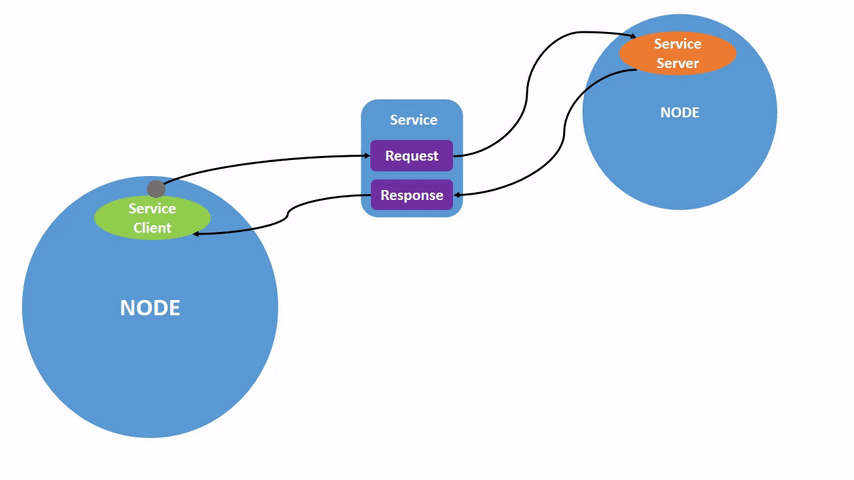
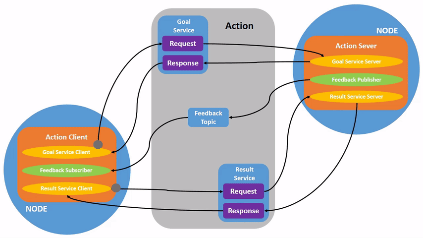

Conceptos Básicos
Espacio de trabajo
¿Qué es un espacio de trabajo en ROS 2?
Un espacio de trabajo (workspace) en ROS 2 es una carpeta estructurada que contiene paquetes ROS 2, los cuales pueden estar escritos en Python o C++. Todos los paquetes se compilan y organizan dentro del workspace.
¿Qué es colcon?
colcon es la herramienta oficial y recomendada para construir,
compilar y organizar workspaces en ROS 2.
Proviene de “COmplex LOgic CONstructor” y fue diseñado para reemplazar
herramientas anteriores como catkin_make o ament_tools.
Características de colcon
Compila múltiples paquetes de forma paralela.
Detecta dependencias entre paquetes y respeta el orden de compilación.
Separa los archivos construidos en carpetas específicas.
Es extensible mediante plugins.
Instalación de colcon y extensiones recomendadas
sudo apt install python3-colcon-common-extensions
Comandos principales de colcon
Comando |
¿Qué hace? |
|---|---|
|
Compila todos
los paquetes en
|
|
Compila solo un paquete específico |
|
Muestra todos los paquetes del workspace |
|
Ejecuta pruebas definidas en los paquetes |
|
En paquetes Python, enlaza código para no recompilar cada vez |
Directorios creados por colcon al compilar
Al ejecutar colcon build, se generan 3 carpetas principales:
ros2_ws/
├── build/
├── install/
└── log/
Carpeta |
¿Para qué sirve? |
|---|---|
|
Archivos temporales de compilación. ROS 2 genera aquí el código intermedio. |
|
Aquí se instalan los ejecutables,
scripts, bibliotecas y archivos
generados. Es lo que usas con
|
|
Archivos de salida, advertencias y errores de compilación. Útil para depuración. |
Limpieza de la build
Si es necesario limpiar el workspace por completo:
colcon build --packages-select my_package --cmake-clean-cache
O para limpiar todo:
rm -rf build/ install/ log/
Paquetes
¿Qué son los paquetes?
Un paquete es la unidad mínima de construcción en ROS 2. Contiene código fuente, archivos de lanzamiento, configuraciones, y puede ser en Python o C++.
¿Qué tipos de paquetes existen?
ament_cmake→ para paquetes en C++ament_python→ para paquetes en Python
Diferencias entre paquetes en Python y C++
Característica |
C++ ( |
Python ( |
|---|---|---|
Compilación |
Requiere CMake |
No necesita compilar código |
setup.py |
No usa |
Obligatorio |
Velocidad |
Más rápida |
Más simple de escribir |
Crear un paquete Python desde cero
Para crear un paquete usamos el comando ros2 pkg create y añadiños
las siguientes argumentos :
Descripción de opciones:
Parte |
Función |
|---|---|
|
Nombre del paquete |
|
Define el tipo de compilador |
|
Agrega la licencia al package.xml |
|
No crea nodo por defecto, se ignora usualmente |
|
Agrega la descripción del paquete, se ignora usualmente |
Resumen para crear un paquete Python completo
ros2 pkg create py_listener_pkg \
--build-type ament_python \
--dependencies rclpy std_msgs \
--license "MIT" \
--description "Paquete de ejemplo en Python para suscripción ROS 2"
Organización de los archivos del paquete
El siguiente árbol es ilustrativo.
~/ros2_ws/src/
├── avig_msg/ # Interfaces personalizadas existentes
│ └── action/
│ └── MoverA.action
└── mi_pkg_python/
├── package.xml # Dependencias del paquete ROS 2
├── setup.py # Registro de módulos ejecutables
├── setup.cfg # Directorio de scripts instalados
├── resource/
│ └── mi_pkg_python # Marcador ament
├── launch/
│ └── ejemplo_nodos.launch.py # Lanzamiento opcional
└── mi_pkg_python/
├── __init__.py
├── estructura_nodo.py
├── estructura_publicador.py
Funciones de los archivos:
package.xml: identifica el paquete y declara las dependencias de ROS 2.setup.py: instala los módulos y asigna nombres de ejecutables pararos2 run.setup.cfg: indica dónde instalar los ejecutables de Python.mi_pkg_python/__init__.py: identifica el directorio como paquete Python.launch/*.launch.py: permite iniciar y configurar uno o varios nodos.avig_msg: contiene las definiciones de interfaces propias; se mantiene independiente del paquete Python según la estructura actual del curso.
Nodos
Un nodo es una entidad computacional que ejecuta una función específica, como mover un robot móvil simulado, leer sensores, o calcular trayectorias.
Un nodo escrito con rclpy sigue normalmente seis pasos:
Importar bibliotecas de Python y ROS 2.
Definir una clase que herede de
Node.Llamar al constructor de
Nodemediantesuper().__init__().Crear las interfaces que necesite (si las hay).
Definir los callbacks que ejecutarán la lógica.
Crear ``main()`` para inicializar, procesar y finalizar ROS 2.
# 1. Bibliotecas necesarias para crear un nodo ROS 2.
import rclpy
from rclpy.node import Node
# 2. La clase del programa hereda de Node.
class NodoBasico(Node):
# 3. El constructor configura el nodo una sola vez.
def __init__(self):
super().__init__('nodo_basico') # Nombre visible con ros2 node list.
self.get_logger().info('Nodo iniciado correctamente.')
# 4. Aquí se crearían publicadores, suscripciones, etc.
# 5. Aquí se declararían los parámetros y estados necesarios.
# 6. Punto de entrada del proceso.
def main(args=None):
rclpy.init(args=args) # Inicializar el contexto ROS 2.
node = NodoBasico() # Construir el nodo.
try:
rclpy.spin(node) # Atender callbacks hasta detenerlo.
except KeyboardInterrupt:
pass
finally:
node.destroy_node() # Liberar las interfaces del nodo.
if rclpy.ok():
rclpy.shutdown() # Finalizar el contexto ROS 2.
if __name__ == '__main__':
main()
Significado de los elementos de Python
Elemento |
Significado |
|---|---|
|
Define una clase que hereda las funciones de un nodo ROS 2. |
|
Constructor que se ejecuta al instanciar el objeto. |
|
Inicializa la parte |
|
Referencia a la instancia; permite acceder a sus variables y métodos. |
|
Llama a un método de |
|
Referencia al método que será invocado cuando ocurra un evento. |
|
Inicializa los recursos necesarios del cliente ROS 2. |
|
Procesa eventos, mensajes, timers y respuestas por medio del executor. |
|
Libera el nodo y sus entidades. |
|
Ejecuta |
Nota
rclpy.spin(node) se utiliza cuando el nodo debe permanecer atendiendo
eventos. Si un programa de propósito puntual solo realiza una operación,
puede utilizar otro patrón de ejecución, pero siempre debe gestionar
correctamente la inicialización y el cierre.
Ejemplo:
turtlesim_node: renderiza la tortuga y ejecuta sus acciones.turtle_teleop_key: interpreta teclas y publica comandos de velocidad.teleop_twist_keyboard: interpreta teclas y publica comandos de velocidad.
Listar nodos activos:
ros2 node list
Publicadores y suscriptores: comunicación por tópicos
En una comunicación por tópicos, el publicador envía mensajes y uno o varios suscriptores pueden recibirlos. El nombre del tópico, el tipo de mensaje y la compatibilidad de QoS deben coincidir para que exista intercambio.

Tomado de: ROS 2 Jazzy - Documentación Oficial
Estructura del publicador
Un publicador necesita crear un objeto publicador, construir un mensaje y publicarlo. Si el envío es periódico, suele utilizarse un temporizador.
import rclpy
from rclpy.node import Node
from std_msgs.msg import String # Tipo que contiene un campo data.
class PublicadorClase(Node):
def __init__(self):
super().__init__('publicador_clase')
# Tipo, nombre del tópico y profundidad de la cola (QoS).
self.publisher_ = self.create_publisher(String, 'topic', 10)
# El callback se ejecutará cada 0.5 segundos.
self.timer = self.create_timer(0.5, self.timer_callback)
self.contador = 0
def timer_callback(self):
mensaje = String() # Crear el mensaje.
mensaje.data = f'Mensaje {self.contador}'
self.publisher_.publish(mensaje) # Enviar al tópico.
self.get_logger().info(mensaje.data)
self.contador += 1
def main(args=None):
rclpy.init(args=args)
node = PublicadorClase()
try:
rclpy.spin(node)
except KeyboardInterrupt:
pass
finally:
node.destroy_node()
if rclpy.ok():
rclpy.shutdown()
if __name__ == '__main__':
main()
create_publisher() no publica por sí mismo: solo crea la interfaz. La
publicación se realiza con publish(mensaje). En este caso, el temporizador
es el mecanismo que desencadena cada envío.
Estructura del suscriptor
El suscriptor necesita crear una suscripción y registrar un callback que reciba un mensaje del tipo configurado.
import rclpy
from rclpy.node import Node
from std_msgs.msg import String
class SuscriptorClase(Node):
def __init__(self):
super().__init__('suscriptor_clase')
# Guardar la suscripción en un atributo de la instancia.
self.subscription = self.create_subscription(
String, 'topic', self.listener_callback, 10
)
def listener_callback(self, msg):
# Se ejecuta por cada mensaje recibido de 'topic'.
self.get_logger().info(f'Recibido: {msg.data}')
def main(args=None):
rclpy.init(args=args)
node = SuscriptorClase()
try:
rclpy.spin(node)
except KeyboardInterrupt:
pass
finally:
node.destroy_node()
if rclpy.ok():
rclpy.shutdown()
if __name__ == '__main__':
main()
Ejemplos de ROS2:
/turtle1/cmd_vel: donde se publican los comandos de velocidad lineal y angular./turtle1/pose: donde se publica la posición actual de la tortuga.
Ver temas activos:
ros2 topic list
En este ejemplo se muestra cómo lanzar el nodo de turtlesim y
controlar su movimiento mediante el teclado. También se explica cómo
utilizar otro nodo de teleoperación genérico (teleop_twist_keyboard)
haciendo uso de remapeo de temas en ROS 2.
1: Instalación de paquetes necesarios
sudo apt update
sudo apt install ros-jazzy-turtlesim ros-jazzy-teleop-twist-keyboard
2: Lanzar la ventana del simulador
ros2 run turtlesim turtlesim_node
Este comando lanza el nodo que genera la ventana de simulación con la
tortuga inicial (/turtle1).
3: Controlar la tortuga con el teclado (teleop integrado)
ros2 run turtlesim turtle_teleop_key
4: Control con un nodo genérico de teleoperación
En este ejemplo se usa el nodo teleop_twist_keyboard del paquete
teleop_twist_keyboard. Este nodo: Lee las teclas del teclado y
publica mensajes del tipo geometry_msgs/msg/Twist
ros2 run teleop_twist_keyboard teleop_twist_keyboard
Por defecto, este nodo publica en el tema:
/cmd_vel
Sin embargo, en turtlesim, la tortuga escucha comandos en:
/turtle1/cmd_vel
¿Cómo solucionar esto?
Remapeo de temas
ROS 2 permite redirigir (“remapear”) los nombres de los temas sin necesidad de cambiar el código del nodo. Para hacerlo se usa:
--ros-args -r [tema_origen]:=[tema_destino]
En este caso específico:
ros2 run teleop_twist_keyboard teleop_twist_keyboard --ros-args -r cmd_vel:=/turtle1/cmd_vel
Esto se entiende como:
“Cuando este nodo publique en
/cmd_vel, en realidad envíalo a/turtle1/cmd_vel.”
¿Por qué es útil el remapeo?
Evita modificar el código fuente de los nodos.
Permite reutilizar nodos genéricos con distintos robots o simuladores.
Facilita pruebas rápidas con distintos sistemas.
Servicios
Un servicio en ROS 2 es una operación remota que sigue un patrón de llamada y respuesta (request-response).
Componentes de un servicio:
Cliente: el nodo que inicia la solicitud.
Servidor: el nodo que atiende la solicitud y envía la respuesta.
Tipo de servicio: define la estructura de los datos solicitados y respondidos.
Estructura de un Servicio
Los servicios están definidos por archivos .srv, que contienen dos
partes separadas por ---:
# Ejemplo: example_interfaces/srv/AddTwoInts
int64 a
int64 b
---
int64 sum
Esto significa que:
El cliente enviará dos enteros
aybEl servidor responderá con un entero
sum
Comunicación Cliente-Servidor
La interacción funciona así:

Tomado de: ROS 2 Jazzy - Documentación OficialServidor de servicio
Un servidor necesita declarar el tipo .srv, registrar el nombre del
servicio y proporcionar un callback que reciba request y response.
import rclpy
from rclpy.node import Node
from example_interfaces.srv import AddTwoInts
class ServidorSuma(Node):
def __init__(self):
super().__init__('servidor_suma')
# Tipo de servicio, nombre y callback que responde solicitudes.
self.srv = self.create_service(
AddTwoInts, 'sumar_dos_enteros', self.sumar_callback
)
self.get_logger().info('Servicio /sumar_dos_enteros disponible.')
def sumar_callback(self, request, response):
# request contiene los campos definidos ANTES de ---.
# response contiene los campos definidos DESPUÉS de ---.
response.sum = request.a + request.b
self.get_logger().info(f'{request.a} + {request.b} = {response.sum}')
return response # Siempre devolver la respuesta tipada.
def main(args=None):
rclpy.init(args=args)
node = ServidorSuma()
try:
rclpy.spin(node)
except KeyboardInterrupt:
pass
finally:
node.destroy_node()
if rclpy.ok():
rclpy.shutdown()
if __name__ == '__main__':
main()
Cliente de servicio asíncrono
El cliente debe crear una entidad Client, construir un objeto Request
y llamar a call_async(). La operación devuelve un Future, que es un
objeto que permite obtener la respuesta cuando haya terminado.
import rclpy
from rclpy.node import Node
from example_interfaces.srv import AddTwoInts
class ClienteSuma(Node):
def __init__(self):
super().__init__('cliente_suma')
# El nombre y el tipo deben coincidir con los del servidor.
self.cli = self.create_client(AddTwoInts, 'sumar_dos_enteros')
def enviar_solicitud(self, a, b):
# Esperar de forma acotada hasta que exista un servidor.
if not self.cli.wait_for_service(timeout_sec=5.0):
self.get_logger().error('Servicio no disponible.')
return None
solicitud = AddTwoInts.Request()
solicitud.a = int(a)
solicitud.b = int(b)
# call_async() devuelve inmediatamente un Future.
return self.cli.call_async(solicitud)
def main(args=None):
rclpy.init(args=args)
node = ClienteSuma()
try:
futuro = node.enviar_solicitud(5, 7)
if futuro is not None:
# Es válido aquí: estamos en main(), SIN otro spin activo.
rclpy.spin_until_future_complete(node, futuro)
if futuro.exception() is not None:
node.get_logger().error(str(futuro.exception()))
else:
resultado = futuro.result()
node.get_logger().info(f'Suma recibida: {resultado.sum}')
except KeyboardInterrupt:
pass
finally:
node.destroy_node()
if rclpy.ok():
rclpy.shutdown()
if __name__ == '__main__':
main()
Comprobación del servicio
# Terminal 1: servidor
ros2 run mi_pkg_python estructura_servidor_srv
# Terminal 2: cliente
ros2 run mi_pkg_python estructura_cliente_srv
# Alternativa: invocar el servicio desde la terminal.
ros2 service list -t
ros2 service type /sumar_dos_enteros
ros2 interface show example_interfaces/srv/AddTwoInts
ros2 service call /sumar_dos_enteros example_interfaces/srv/AddTwoInts \
"{a: 5, b: 7}"
¿Cuándo usar un Servicio?
Situación |
Usar Servicio |
|---|---|
Encender o apagar un dispositivo |
✅ |
Calcular una operación matemática |
✅ |
Consultar el estado de un sistema |
✅ |
Recibir datos periódicos (sensor, etc) |
❌ (usar tópico) |
Ejecutar tareas con duración variable |
❌ (usar acción) |
Ventajas del uso de servicios
Comunicación clara de solicitud y respuesta.
Ideal para operaciones atómicas.
Bajo acoplamiento: los nodos solo necesitan conocer el tipo del servicio.
Facilita control de errores: se sabe si hubo respuesta o no.
Consideraciones técnicas
La espera por la respuesta puede bloquear el nodo (sin
async).Los servicios no están diseñados para flujos continuos de datos.
Si necesitas emitir múltiples respuestas a una sola solicitud → usa acciones.
Ejemplos de servicios comunes en ROS 2
Servicio |
Tipo |
Descripción |
|---|---|---|
|
|
Borrar pantalla de simuladores como turtlesim |
|
|
Reiniciar el estado de un nodo |
|
|
Sumar dos números |
|
|
Crear nueva tortuga |
Comandos útiles
Listar servicios disponibles:
ros2 service list
Ver tipo de un servicio:
ros2 service type /nombre_servicio
Ver definición de un servicio:
ros2 interface show [servicio]
Llamar un servicio desde terminal:
ros2 service call /[servicio] "argumentos"
Acciones
¿Qué es una Acción en ROS 2?
En ROS 2, una acción (action) es una estructura de comunicación
que permite la ejecución de tareas a largo plazo, donde se necesita:
Enviar un objetivo (goal) desde un nodo cliente a un nodo servidor.
Recibir retroalimentación (feedback) mientras se ejecuta la tarea.
Obtener un resultado (result) cuando finaliza la acción.
Tener la posibilidad de cancelar la ejecución en cualquier momento.
Componentes Clave
Cliente de acción: Nodo que solicita ejecutar una acción.
Servidor de acción: Nodo que ejecuta la acción y responde con resultados o feedback.
Goal: Datos de entrada que representan la tarea.
Result: Salida final cuando se completa la acción.
Feedback: Información de progreso enviada mientras se ejecuta.
Flujo de Ejecución
El cliente envía un objetivo (goal).
El servidor acepta o rechaza el objetivo.
Si es aceptado, el servidor comienza la ejecución.
Se envía feedback continuamente.
Cuando termina, se envía un resultado.
El cliente puede cancelar la acción si es necesario.´

Tomado de: ROS 2 Jazzy - Documentación Oficial
Estructura de un action
En este repositorio se utiliza de ejemplo un action personalizado MoverA:
# Objetivo
float32 x_actual
float32 y_actual
float32 x_meta
float32 y_meta
---
# Resultado
bool success
---
# Feedback
float32 distancia_restante
Partes obligatorias del servidor de acción
``ActionServer``: entidad que registra el nombre y tipo de la acción.
``goal_callback()``: acepta o rechaza metas.
``execute_callback()``: ejecuta la tarea, publica feedback y devuelve un
MoverA.Result.``cancel_callback()``: acepta o rechaza solicitudes de cancelación.
``goal_handle``: representa una meta concreta y permite consultar su cancelación y establecer estados terminales.
Executor: procesa las solicitudes y las tareas concurrentes.
import math
import time
import rclpy
from rclpy.node import Node
from rclpy.action import ActionServer, GoalResponse, CancelResponse
from rclpy.callback_groups import ReentrantCallbackGroup
from rclpy.executors import MultiThreadedExecutor
from avig_msg.action import MoverA
class ServidorMoverA(Node):
def __init__(self):
super().__init__('movera_server')
# Permite atender una cancelación mientras hay una meta ejecutándose.
self.grupo = ReentrantCallbackGroup()
self.servidor = ActionServer(
self, MoverA, 'mover_a',
execute_callback=self.execute_callback,
goal_callback=self.goal_callback,
cancel_callback=self.cancel_callback,
callback_group=self.grupo
)
def goal_callback(self, goal_request):
# En un robot físico validaríamos límites y conflictos.
return GoalResponse.ACCEPT
def cancel_callback(self, goal_handle):
# Aceptar cancelar NO marca aún el estado final CANCELED.
return CancelResponse.ACCEPT
def execute_callback(self, goal_handle):
x = float(goal_handle.request.x_actual)
y = float(goal_handle.request.y_actual)
meta_x = float(goal_handle.request.x_meta)
meta_y = float(goal_handle.request.y_meta)
feedback = MoverA.Feedback()
resultado = MoverA.Result()
while rclpy.ok():
# Verificar cancelación durante la tarea, no solo al comenzar.
if goal_handle.is_cancel_requested:
goal_handle.canceled()
resultado.success = False
return resultado
dx, dy = meta_x - x, meta_y - y
distancia = math.hypot(dx, dy)
if distancia <= 0.1: # Tolerancia de llegada.
goal_handle.succeed()
resultado.success = True
return resultado
# Simulación: avanzar 0.1 unidades hacia la meta.
paso = min(0.1, distancia)
x += paso * dx / distancia
y += paso * dy / distancia
feedback.distancia_restante = float(
math.hypot(meta_x - x, meta_y - y)
)
goal_handle.publish_feedback(feedback)
time.sleep(0.5) # Solo para el ejercicio educativo.
if goal_handle.is_active:
goal_handle.abort()
resultado.success = False
return resultado
def main(args=None):
rclpy.init(args=args)
node = ServidorMoverA()
executor = MultiThreadedExecutor(num_threads=2)
executor.add_node(node)
try:
executor.spin() # ÚNICO spin del servidor.
except KeyboardInterrupt:
pass
finally:
executor.shutdown()
node.destroy_node()
if rclpy.ok():
rclpy.shutdown()
if __name__ == '__main__':
main()
Importante
El programa usa un bucle con time.sleep() únicamente para representar
un recorrido 2D ficticio. No es un algoritmo de control de motores en
tiempo real. ReentrantCallbackGroup permite solapamiento de callbacks;
en una aplicación que controle un único robot físico sería necesario
gestionar explícitamente metas simultáneas y condiciones de seguridad.
Partes obligatorias del cliente de acción
``ActionClient``: registra tipo y nombre de acción.
``MoverA.Goal()``: construye la meta con valores válidos.
``send_goal_async()``: inicia el envío de la meta.
``goal_response_callback()``: comprueba si fue aceptada.
``feedback_callback()``: recibe el progreso; puede activar una condición de cancelación.
``cancel_goal_async()``: solicita cancelar una meta aceptada.
``get_result_async()``: obtiene el estado y el resultado final.
import rclpy
from rclpy.node import Node
from rclpy.action import ActionClient
from action_msgs.msg import GoalStatus
from avig_msg.action import MoverA
class ClienteMoverA(Node):
def __init__(self):
super().__init__('movera_client')
self.cliente = ActionClient(self, MoverA, 'mover_a')
self.meta = None
self.cancelacion_solicitada = False
self.terminado = False
def enviar_meta(self):
if not self.cliente.wait_for_server(timeout_sec=5.0):
self.get_logger().error('No hay servidor de acción disponible.')
self.terminado = True
return
objetivo = MoverA.Goal()
objetivo.x_actual, objetivo.y_actual = 3.0, 3.0
objetivo.x_meta, objetivo.y_meta = 0.0, 0.1
futuro = self.cliente.send_goal_async(
objetivo, feedback_callback=self.recibir_feedback
)
futuro.add_done_callback(self.respuesta_meta)
def respuesta_meta(self, futuro):
self.meta = futuro.result()
if not self.meta.accepted:
self.get_logger().warn('Meta rechazada.')
self.terminado = True
return
futuro_resultado = self.meta.get_result_async()
futuro_resultado.add_done_callback(self.recibir_resultado)
def recibir_feedback(self, mensaje):
distancia = mensaje.feedback.distancia_restante
self.get_logger().info(f'Faltan {distancia:.2f} unidades.')
# Evitar pedir varias veces la misma cancelación.
if (distancia < 0.8 and self.meta is not None and not self.cancelacion_solicitada):
self.cancelacion_solicitada = True
futuro = self.meta.cancel_goal_async()
futuro.add_done_callback(self.respuesta_cancelacion)
def respuesta_cancelacion(self, futuro):
if futuro.result().goals_canceling:
self.get_logger().info('Cancelación aceptada; espero resultado.')
else:
self.get_logger().warn('Cancelación no aceptada.')
def recibir_resultado(self, futuro):
respuesta = futuro.result()
if respuesta.status == GoalStatus.STATUS_CANCELED:
self.get_logger().info('Acción cancelada.')
elif respuesta.status == GoalStatus.STATUS_SUCCEEDED:
self.get_logger().info('Objetivo completado.')
else:
self.get_logger().warn('Meta abortada u otro estado final.')
self.terminado = True
def main(args=None):
rclpy.init(args=args)
node = ClienteMoverA()
try:
node.enviar_meta()
# spin_once está en main(), no dentro de un callback ya en spin.
while rclpy.ok() and not node.terminado:
rclpy.spin_once(node, timeout_sec=0.1)
except KeyboardInterrupt:
pass
finally:
node.destroy_node()
if rclpy.ok():
rclpy.shutdown()
if __name__ == '__main__':
main()
Diferencia entre estado y resultado
Estado |
Interpretación |
|---|---|
|
El servidor aceptó la meta; puede estar esperando ejecución. |
|
La tarea está en ejecución. |
|
Se aceptó la solicitud de cancelación y aún se está procesando. |
|
El servidor marcó la meta como cancelada. |
|
El servidor marcó la meta como completada correctamente. |
|
El servidor abortó la meta debido a una falla u otra condición. |
resultado.success es una variable definida por nuestra interfaz.
El estado GoalStatus pertenece al protocolo de acciones de ROS 2.
Aceptar cancelar no significa que la meta ya haya terminado: el cliente
debe esperar el resultado y comprobar STATUS_CANCELED.
Spin, executors y grupos de callbacks
spin atiende callbacks de las entidades de un nodo mediante un executor.
Los grupos de callbacks determinan qué funciones pueden ejecutarse de forma
concurrente.
API |
Uso típico |
|---|---|
|
Mantener activo un nodo sencillo. |
|
Procesar eventos desde un bucle principal que no esté girando en otro executor. |
|
Esperar una respuesta fuera de callbacks, sin un |
|
Permitir que diferentes hilos atiendan callbacks del nodo. |
|
Permitir que los callbacks de su grupo puedan solaparse. |
|
Evitar ejecución simultánea de callbacks del mismo grupo. |
Advertencia
Error conocido durante la migración a Jazzy: la implementación antigua
del servidor MoverA llamaba a rclpy.spin_once(self) dentro de
``execute_callback()``, mientras el nodo ya estaba ejecutando
rclpy.spin(node). En el entorno probado produjo
RuntimeError: Executor is already spinning. La solución es no
anidar el procesamiento del mismo executor; para la práctica con
cancelación se usa MultiThreadedExecutor y
ReentrantCallbackGroup.
spin_once() no fue eliminado en Jazzy, y la cancelación de acciones
ya existía en Humble. Lo que cambió en esta práctica es el patrón de
concurrencia y la forma en que evitamos la reentrada indebida del executor.
En Conclusión: Las acciones combinan lo mejor de los servicios y tópicos, permitiendo tareas de larga duración con control dinámico.
Casos de Uso Típicos
Navegar a una posición (navegación autónoma).
Ejecutar trayectorias robóticas.
Manipular objetos.
Esperar eventos con tiempo prolongado.
Controlar movimiento con retroalimentación.
Ejemplos de acciones existentes
nav2_msgs/action/NavigateToPosecontrol_msgs/action/FollowJointTrajectorymoveit_msgs/action/MoveGrouplifecycle_msgs/action/Transition
Parámetros: configurar nodos sin editar el programa
Un parámetro debe declararse antes de consultarse en el esquema básico de
rclpy. Puede recibir un valor inicial y ser sobrescrito al lanzar el nodo.
import rclpy
from rclpy.node import Node
class NodoParametros(Node):
def __init__(self):
super().__init__('nodo_parametros')
# Declarar un parámetro de texto, con valor predeterminado.
self.declare_parameter('saludo', 'Hola desde ROS 2')
# El timer mostrará el valor actual cada segundo.
self.timer = self.create_timer(1.0, self.timer_callback)
def timer_callback(self):
saludo = self.get_parameter('saludo').value
self.get_logger().info(str(saludo))
def main(args=None):
rclpy.init(args=args)
node = NodoParametros()
try:
rclpy.spin(node)
except KeyboardInterrupt:
pass
finally:
node.destroy_node()
if rclpy.ok():
rclpy.shutdown()
if __name__ == '__main__':
main()
ros2 run mi_pkg_python estructura_parametros \
--ros-args -p saludo:='Bienvenido a AvigTech'
# Desde otra terminal:
ros2 param list /nodo_parametros
ros2 param get /nodo_parametros saludo
ros2 param set /nodo_parametros saludo 'Mensaje modificado'
Nota
El temporizador mantiene su período de 1.0 s. Cambiar el valor de un
parámetro llamado frecuencia_hz no reconfiguraría automáticamente
un timer existente: el programa tendría que aplicar ese cambio.
Launch: ejecutar y parametrizar varios nodos
El archivo .launch.py describe qué ejecutables se iniciarán, sus
nombres, parámetros y remapeos. launch no es un nodo ROS 2 por sí mismo.
from launch import LaunchDescription
from launch_ros.actions import Node
def generate_launch_description():
return LaunchDescription([
Node(
package='mi_pkg_python',
executable='estructura_publicador',
name='publicador_clase',
output='screen'
),
Node(
package='mi_pkg_python',
executable='estructura_suscriptor',
name='suscriptor_clase',
output='screen'
)
])
ros2 launch mi_pkg_python ejemplo_nodos.launch.py
Para que ROS 2 encuentre ese launch, se debe instalar desde setup.py
mediante data_files (véase la sección siguiente).